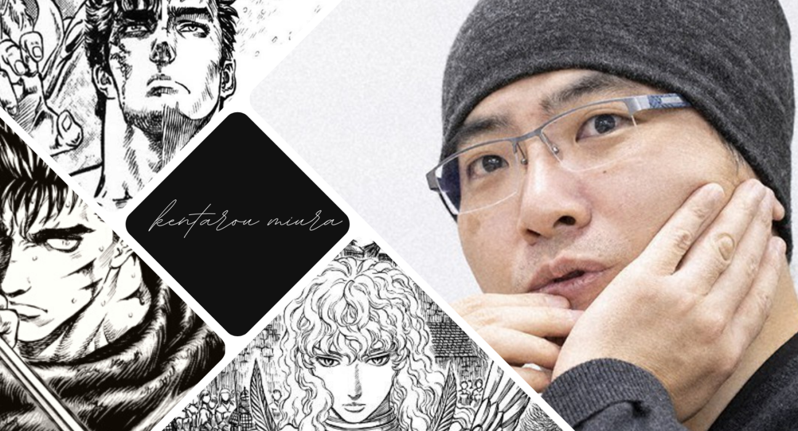

Kentaro Miura
The man that inspired millions through his art

Kentaro Miura was a Japanese manga artist. He was best known for his dark fantasy series Berserk, which began serialization in 1989 and continued until his death
Here's a timeline of Kentaro Miura's life:
- 1966 - Born in Chiba, Chiba Prefecture, Japan.
- 1976 - at the age of 10, created his first manga, entitled Miuranger, which was published for his classmates in a school publication
- 1977 - Miura created his second manga, Ken e no Michi (剣への道, "The Way to the Sword")
- 1982 - Miura enrolled in an artistic curriculum, where he and his classmates started publishing their works in school booklets. There, he befriended his later fellow manga artist Kouji Mori
- 1985 - Miura applied for entrance to the art college of Nihon University. He submitted a short project, Futatabi (再び, "Once More"), for examination and was granted admission. The project later earned him the 34th Newcomer Manga Award from Weekly Shōnen Magazine.
- 1988 - Miura published a prototype of Berserk in Hakusensha's Monthly ComiComi; the 48-page prototype placed second in ComiComi's seventh Manga School competition.
- 1989 - The full serialization of Berserk, which would become Miura's most famous and successful work, began in Hakusensha's Monthly Animal House
- 2002 - Miura received the Award for Excellence at the sixth Tezuka Osamu Cultural Prizes for Berserk.
- 2021 - On May 6, 2021, Miura died due to acute aortic dissection, at the age of 54. His death was publicly announced on May 20, 2021. A private ceremony was held by his family. Various manga artists offered condolences, including Kouji Mori, Miura's high school friend, and George Morikawa, who shared a story of their friendship.
- Legacy - Established as one of the best-selling manga of all time, Miura's series Berserk impacted the manga medium and beyond, with journalist Jade King stating: "[It] is difficult to overstate the tremendous impact his work has had on the world of games, manga, film, anime, and even literature." A "memorial" Young Animal issue dedicated to Miura was released on September 10, 2021. Besides the inclusion of the posthumous chapter 364 of Berserk, the issue featured a special "Messages to Kentarou Miura" booklet and a poster of "famous scenes" from the manga.On June 7, 2022, Hakusensha and Kouji Mori announced that Berserk would continue publication, using plans and thoughts that were relayed to Mori by Miura himself, as well as memoranda and character designs that Miura left behind. As the only person who knows the ending Miura intended, Mori agreed to continue the series